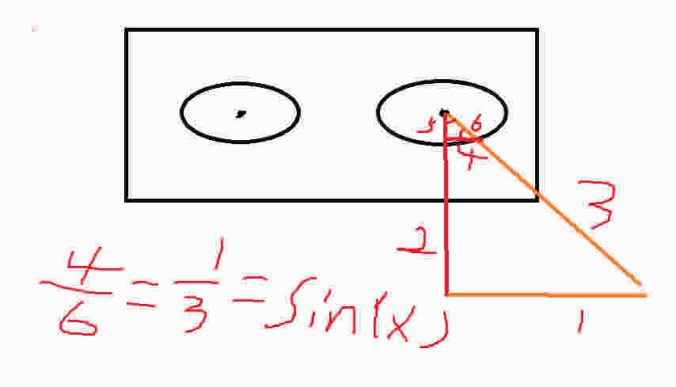
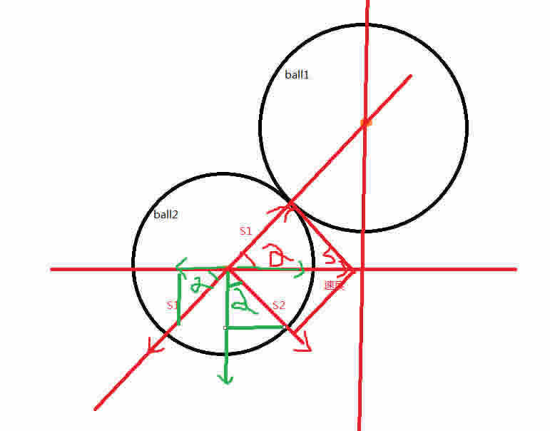

DEMO演示 学习Math对象的三角函数运用2
js代码
//三角函数应用
window.onload = function(){
//一：会动的眼睛 数学等比应用
数学分析如下

var oEye1 = document.getElementById('eye1');
var oEye2 = document.getElementById('eye2');
var oEye1Left = parseInt(getStyle(oEye1, "left")); //眼睛1起始位置
var oEye1Top = parseInt(getStyle(oEye1, "top"));
var oEye2Left = parseInt(getStyle(oEye2, "left")); //眼睛2起始位置
var oEye2Top = parseInt(getStyle(oEye2, "top"));
document.onmousemove = function(ev){
var oEvent = ev || event;
var mouseX = oEvent.clientX;
var mouseY = oEvent.clientY;
eyesMove(oEye1, mouseX, mouseY, oEye1Left, oEye1Top);
eyesMove(oEye2, mouseX, mouseY, oEye2Left, oEye2Top);
}
function eyesMove(obj, mouseX, mouseY, ObjLeft, ObjTop){
var objX = obj.offsetLeft + obj.offsetParent.offsetLeft + obj.offsetWidth/2; //眼睛坐标
var objY = obj.offsetTop + obj.offsetParent.offsetTop + obj.offsetHeight/2;
var diffX1 = (mouseX - objX); //鼠标与眼睛的X轴差值
var diffY1 = (mouseY - objY); //如果为负 那就影响下面的diffX2也为负
var distance1 = Math.sqrt( Math.pow(diffX1, 2) + Math.pow(diffY1, 2) ); //鼠标与眼睛的距离
var radius = 8; //眼睛可以上下左右移动最多8px
// diffX2/radius = diffX1/distance1 = sin(xxx) //数学推导公式
// diffY2/radius = diffY1/distance1 = cos(xxx) //数学推导公式
var diffX2 = radius * (diffX1/distance1); //眼睛实际X轴位置与起始X轴位置的差值 可能为负
var diffY2 = radius * (diffY1/distance1);
obj.style.left = ObjLeft + diffX2 + 'px';
obj.style.top = ObjTop + diffY2 + 'px';
}
//二：模拟台球的碰撞运动 分解速度
数学分析如下

var oBtn2 = document.getElementById('btn2');
oBtn2.onclick = function(){
var oBlack = document.getElementById('black');
var oRed = document.getElementById('red');
var oYellow = document.getElementById('yellow');
var oBlue = document.getElementById('blue');
var oGreen = document.getElementById('green');
punk(oBlack, oRed, 5);
// punk(oBlack, oYellow, 5); //左上 正确
// punk(oBlack, oBlue, -5); //右上 正确
// punk(oBlack, oGreen, -5); //右下 正确
};
//obj2去碰撞obj1 speed是速度
function punk(obj1, obj2, speed){
var TimerObj = null;
var obj1Radius = parseInt(getStyle(obj1, "width"))/2; //obj1半径
var obj2Radius = parseInt(getStyle(obj2, "width"))/2; //obj2半径
var punkFlag = false; //碰撞开关
var obj1sX = 0; //obj1sX等4个值 必须提升作用域到循环外面来
var obj1sY = 0; //如果在碰上的if判断里面var他们 那么下次循环
var obj2sX = 0; //if(punkFlag){XX} 就不认识他们了
var obj2sY = 0;
clearInterval(TimerObj);
TimerObj = setInterval(function(){
var obj1X = obj1.offsetLeft + obj1Radius; //obj1圆心 X坐标
var obj1Y = obj1.offsetTop + obj1Radius;
var obj2X = obj2.offsetLeft + obj2Radius;
var obj2Y = obj2.offsetTop + obj2Radius; //obj2圆心 Y坐标
var distance = getDistance(obj1X, obj1Y, obj2X, obj2Y);
//如果距离小于两球圆心间的距离 说明碰上了
if( distance <= (obj1Radius+obj2Radius) ){
// sin(XX) = (obj2Y - obj1Y)/distance = s2/speed //数学公式 XX代表图中的角度阿尔法
// cos(XX) = (obj2X - obj1X)/distance = s1/speed //数学公式
var tmpSin = (obj2Y - obj1Y)/distance;
var tmpCos = (obj2X - obj1X)/distance;
//将碰撞前的速度speed 分解成速度s1 s2
var s1 = tmpCos * speed;
var s2 = tmpSin * speed;
//将S1 S2分别分解为横向纵向的速度
// cos(XX) = s1X/s1 = tmpCos; //数学公式 XX代表图中的阿尔法
// sin(XX) = s1Y/s1 = tmpSin;
// sin(XX) = s2X/s2 = tmpSin;
// cos(XX) = s2Y/s2 = tmpCos;
var s1X = tmpCos * s1; //s1分解出的横向速度
var s1Y = tmpSin * s1; //s1分解出的纵向速度
var s2X = tmpSin * s2;
var s2Y = tmpCos * s2;
//碰撞后的obj2具备反向的s1速度和正向的s2速度 合成obj2的横向纵向速度
obj2sX = s2X - s1X; //合成的obj2的横向速度
obj2sY = -s2Y - s1Y; //合成的obj2的纵向速度
//碰撞后 由于反作用力 obj1具备上面的s1速度
obj1sX = s1X; //obj1的横向速度
obj1sY = s1Y; //obj1的纵向速度
punkFlag = true; //碰撞了
}
//判断碰撞到的瞬间 上面计算出的两个球的横向纵向速度开始赋值 改变方向
if( punkFlag ){
obj2.style.left = obj2.offsetLeft + obj2sX + 'px';
obj2.style.top = obj2.offsetTop + obj2sY + 'px';
obj1.style.left = obj1.offsetLeft + obj1sX + 'px';
obj1.style.top = obj1.offsetTop + obj1sY + 'px';
}else{ //如果没碰撞
obj2.style.left = obj2.offsetLeft + speed + 'px';
}
}, 10);
}
}
//勾股定理 计算两点间的距离 x1,y1代表第一个点的坐标点 y1,y2代表第二个点的坐标点
function getDistance(x1, y1, x2, y2){
return Math.sqrt( Math.pow((x1-x2),2) + Math.pow((y1-y2),2) );
}
//获取计算后的属性
function getStyle(obj,attr){
if(obj.currentStyle){ //IE
return obj.currentStyle[attr];
}else{ //W3C
return getComputedStyle(obj,false)[attr];
}
}
html代码
<div id="img"> 我的眼睛会动 <div id="eye1"></div> <div id="eye2"></div> </div> <div id="black"></div> <div id="red"></div> <div id="yellow"></div> <div id="blue"></div> <div id="green"></div> <input type="button" id="btn2" value="模拟台球碰撞" />
css代码
*{
margin: 0px;
padding: 0px;
}
/*会动的眼睛*/
#img{
border: 1px solid #ccc;
width: 352px;
height: 182px;
background: url(265.png);
position: absolute;
left: 200px;
top: 150px;
font-size: 19px;
}
#img div{
border: 4px solid #333;
border-radius: 50%;
position: absolute;
top: 82px;
}
#eye1{
left: 225px;
}
#eye2{
left: 272px;
}
/*模拟台球碰撞*/
#black{
width: 100px;
height: 100px;
background: black;
position: absolute;
left: 700px;
top: 450px;
border-radius: 50%
}
#red{
width: 100px;
height: 100px;
background: red;
position: absolute;
left: 200px;
top: 530px;
border-radius: 50%
}
#yellow{
width: 100px;
height: 100px;
background: yellow;
position: absolute;
left: 200px;
top: 390px;
border-radius: 50%
}
#blue{
width: 100px;
height: 100px;
background: blue;
position: absolute;
left: 1200px;
top: 390px;
border-radius: 50%
}
#green{
width: 100px;
height: 100px;
background: green;
position: absolute;
left: 1200px;
top: 530px;
border-radius: 50%
}
#btn2{
position: absolute;
left: 690px;
top: 570px;
width: 120px;
height: 40px;
}